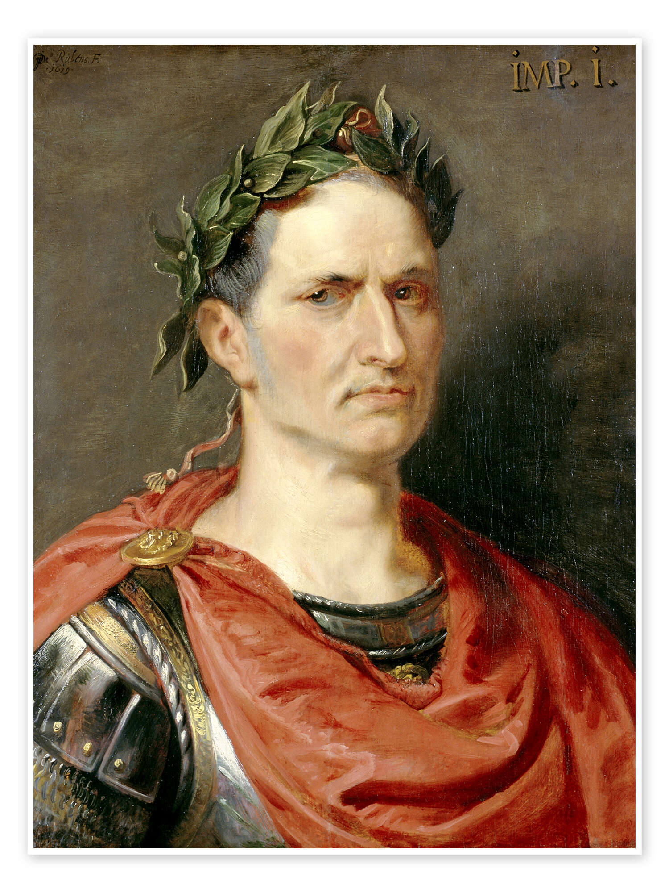
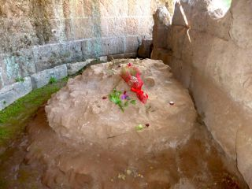

Son parcours unique, au cœur du dernier siècle de la République romaine — bouleversée par les tensions sociales et les guerres civiles —, marque le monde romain et l'histoire universelle. Ambitieux, il s'appuie sur le courant réformateur et démagogue (populares) qui traverse la cité romaine pour favoriser son ascension politique. Stratège et tacticien, il repousse, à l'aide de ses armées, les frontières de la République romaine jusqu'au Rhin et à l'océan Atlantique en conquérant la Gaule, puis utilise ses légions pour s’emparer du pouvoir au cours de la guerre civile l’opposant à Pompée, son ancien allié, puis aux républicains.

Adoré du peuple, pour qui il fait montre de largesses frumentaires, économiques et foncières, il se fait nommer dictateur, d'abord pour dix ans avec des pouvoirs constitutionnels, puis à vie, étant autorisé à porter la toge et la couronne des triomphateurs en permanence. Soupçonné de vouloir instaurer par ces mesures une nouvelle monarchie à Rome, il est assassiné peu après par une conspiration de sénateurs dirigée par Brutus et Cassius.

Voici une courte vidéo résumant l'histoire de César